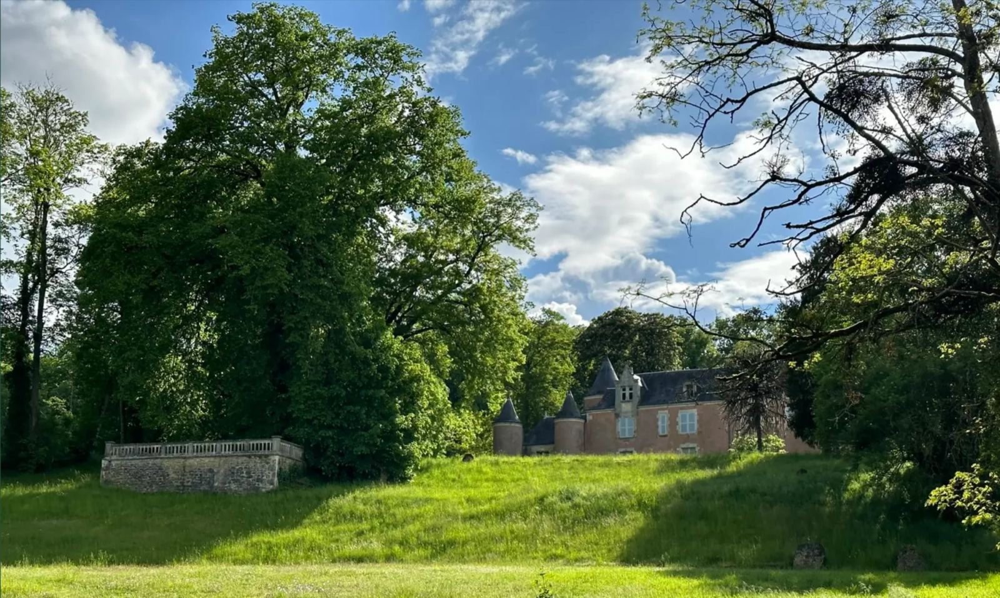
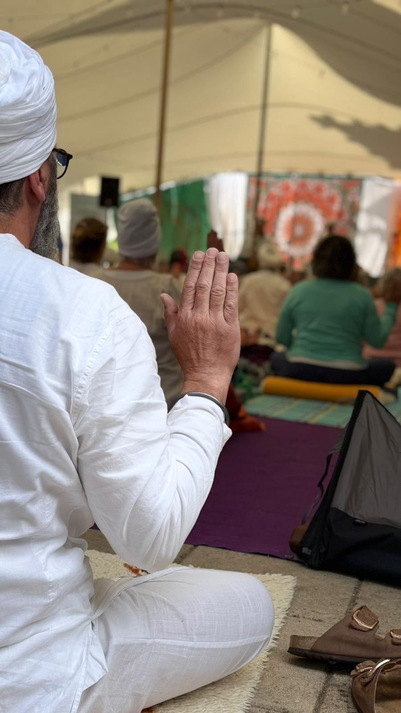
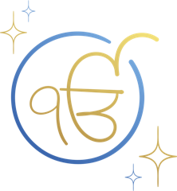
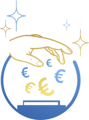
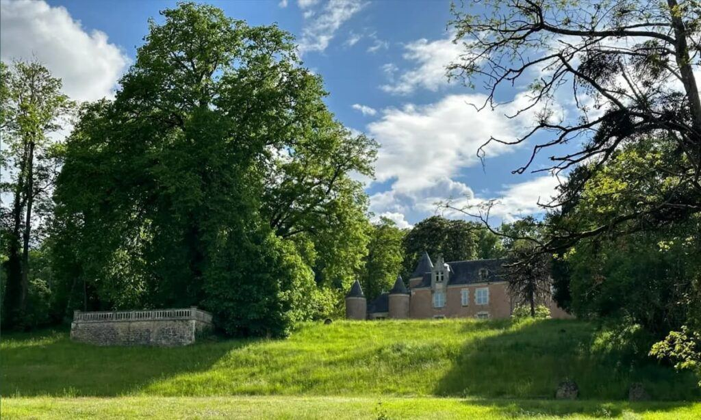
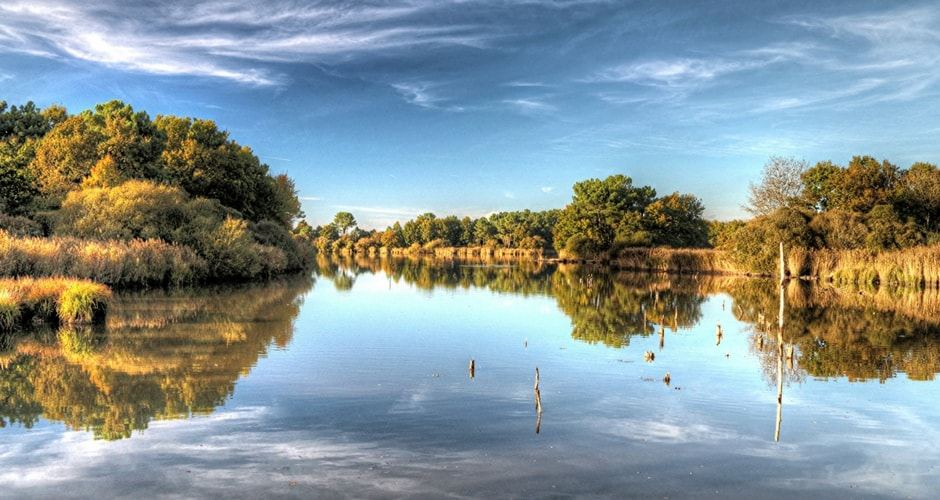
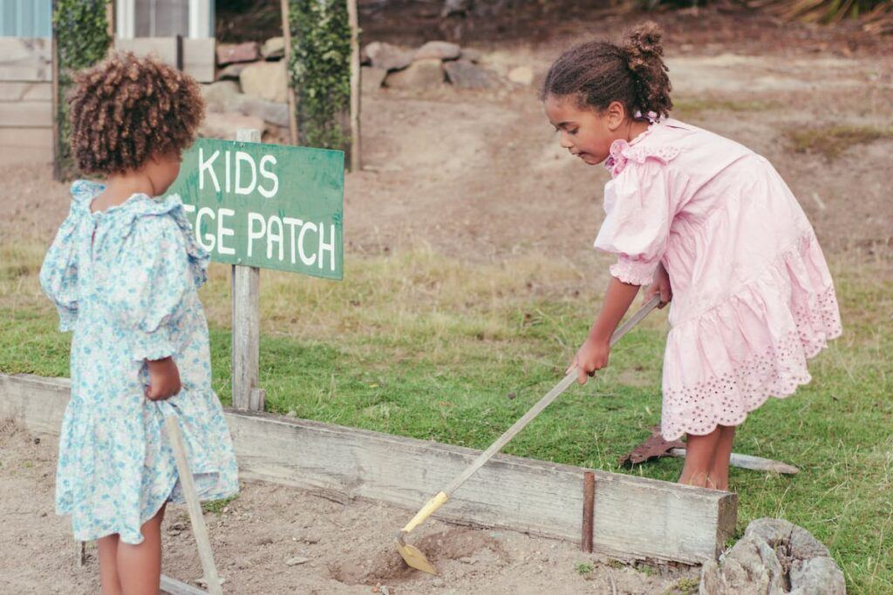
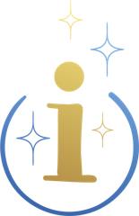

Sādhanas matinales
La pratique de l’aube, ensemble, chaque matin du festival.

 Le festival de la FFKY
Le festival de la FFKY
Du 5 au 9 mai 2027
Un festival autour du Kundalini Yoga organisé par la Fédération, au Domaine de Puygiraud : quatre jours ressourçants pour retrouver la sangat, plonger dans la pratique et repartir rechargé·es et connecté·es.
Chaque année, le festival suit un fil directeur. Cette édition s’ouvre sur la première marche.
1ʳᵉ marche : l’engagement. S’engager pleinement envers soi-même, ses valeurs et ses actes. L’engagement, c’est la capacité à prendre une décision et à s’y tenir : choisir consciemment une direction, une intention, et s’y investir avec constance. Et cette direction est celle du Soi, du Sat Naam. L’engagement donne naissance au caractère.

Rendez-vous du mercredi 5 mai à 14 h au dimanche 9 mai à 11 h. Le programme détaillé 2027 se prépare : nouvelles très bientôt.
La pratique de l’aube, ensemble, chaque matin du festival.

Des masterclasses de Kundalinī Yoga avec des enseignant·es expérimenté·es.

Numérologie, danse, méditation, et des espaces pour le chant, la musique et le soin.

Des soirées de partage, de musique et de célébration.

Un espace féminin de partage et de ressourcement : cercles de parole, rituels, méditations, danse intuitive.

Un bazar de produits autour de la pratique du yoga.
planning 2027 et intervenant·es à confirmer
« Une magnifique expérience et quel engagement des organisateurs. […] Et quelle diversité d’enseignements, de pratiques et de rencontres. »

Le Domaine propose des chambres de 2, 3 ou 4 personnes et des places en dortoir, attribuées en priorité aux familles avec enfants, aux couples et aux personnes plus âgées : réservez dès que votre décision est prise. Le camping accueille aussi les tentes.
Les tarifs comprennent l’événement, les enseignements, les repas et l’hébergement sur place. 120 places en lits et 140 en camping. tarifs 2027 à confirmer

Le Domaine de Puygiraud sur l’Anglin (ex-Château Anand) se trouve à Saint-Pierre-de-Maillé (86260).
Réserver la navette · Proposer ou trouver un covoiturage
Navette depuis la gare : 8 € par personne. tarif 2027 à confirmer

Pendant que vous profitez du festival, vos enfants vivent trois jours d’exploration, de créativité et de partage, dans un espace dédié encadré par un professionnel de l’animation titulaire du BAFA. Chaque parent prête main-forte une ou deux demi-journées.
Repas à horaires réguliers : petit-déjeuner de 7 h à 9 h, déjeuner à 12 h, goûter à 16 h 30, dîner à 18 h 30. Places limitées : info@ffky.fr.

Une question ? contact@ffky.fr
La billetterie 2027 ouvre courant novembre. Pour tout renseignement : contact@ffky.fr.
lien direct de la billetterie 2027 à confirmer
Annulation : les arrhes de 130 € par personne restent acquises au festival ; la totalité est due dans les 15 jours précédant l’événement.
Photos des galeries publiées sur printempsduyoga.fr.
Le seva est au cœur du Printemps du Yoga. Rejoignez l’équipe :